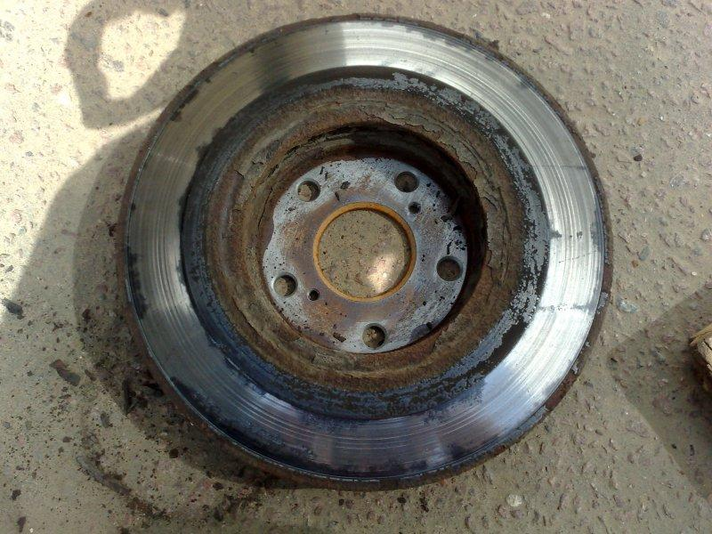

Износ тормозных дисков
Как и тормозные колодки, диски также являются важной частью тормозной системы и тоже подвержены постоянному износу. Необходимо знать, как правильно производится диагностика тормозных дисков, чтобы своевременно принимать соответствующие меры, так как это является залогом безопасности водителя и пассажиров.
КАК ОПРЕДЕЛЯЕТСЯ ИЗНОС ТОРМОЗНЫХ ДИСКОВ?
Диагностика тормозной системы – дело достаточно дорогое и по карману не каждому. Тем не менее, износ тормозных дисков можно определить самостоятельно, так как в руководстве по эксплуатации автомобиля есть соответствующие нормы.
Есть ряд определенных факторов, ускоряющих нормальный износ тормозных дисков. Вот некоторые из них:
Дешевые и некачественные тормозные колодки. Чаще всего, приобретаются ради экономии, а их производитель либо не известен, либо китайский.
Плохое качество тормозных дисков. Если диск изготовлен при не соблюдении правильности технологии, то его износ может возрасти в несколько раз. Обращайте особое внимание при покупке тормозного диска, он должен быть ровным и не иметь бугров и царапин.
Агрессивная езда. Слишком резкое и частое торможение также может привести к ускоренному износу тормозного диска. Такое случается, в основном, в городах с большим количеством светофоров, где постоянное торможение и ускорение – это обычное явление.
Для определения неисправности диска можно пользоваться тремя основными методами:
1. Во время движения обратить внимание на поведение автомобиля при торможении. Если педаль тормоза начинает вибрировать, а в районе колес появляется неприятный шум, то тормозной диск уже достаточно изношен.
2. Демонтировать тормозной диск и визуально провести оценку его состояния. Если диск неисправен, то на нем будут видны трещины, глубокие царапины, различные бугорки и впадины. Эксплуатация тормозов с таким диском может стать вполне опасной.
3. Последний способ выполняется в случае, когда первые два теста не помогли определить неисправность. Для этого толщина диска измеряется с помощью штангенциркуля и сравнивается с нормируемыми значениями. Допустимый износ тормозных дисков может быть указан в руководстве по эксплуатации автомобиля или в техническом пособии к самому тормозному диску.
.png)